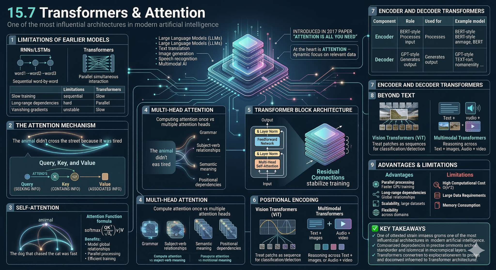

Transformers
Last updated on 2026-04-15 | Edit this page
Estimated time: 65 minutes
Overview
Questions
- What roles do Query, Key, and Value play in attention?
- Why is multi-head attention more powerful than single-head?
- How do residual connections improve deep models?
- How do Vision Transformers differ from CNNs?
- Why is self-attention considered the “core innovation” of transformers?
Objectives
- Understand how self-attention works using Query, Key, and Value
- Explain multi-head attention and its benefits
- Describe the full transformer block structure
- Recognize how transformers extend beyond NLP (e.g., vision)
Transformer Deep Learning Models
Introduction
Transformers are a type of deep learning architecture designed primarily for handling sequential data such as text, audio, and time series. They power many modern AI systems, including language models, translation systems, and chatbots.
Instead of processing data step-by-step like RNNs or LSTMs, transformers process entire sequences in parallel using a mechanism called attention.
The Core Philosophy: Parallelism & Context
Before 2017, AI processed language like a human reading a book: one word at a time, from left to right (using RNNs or LSTMs). This was slow and often “forgot” the beginning of a long sentence by the time it reached the end.
The Transformer changed this by processing the entire sentence at once. It doesn’t care about the order initially; instead, it uses “Attention” to see how every word relates to every other word simultaneously. Key Advantages:
- Parallelization: Because it sees everything at once, we can train it on massive GPUs much faster.
- Long-Range Dependencies: It can easily link a word at the beginning of a 1,000-page book to a word at the very end.
Step 0: Tokenisation & Embedding
Computers don’t read words; they read numbers.
- Tokenization: The sentence “The cat sat” is broken into chunks (tokens): [“The”, ” cat”, ” sat”].
- Embedding: Each token is converted into a long list of numbers (a vector) that represents its meaning. In this space, the vector for “cat” is mathematically close to “kitten” but far from “airplane.”
Step 1: Positional Encoding (The “Map”)
Since the model processes all words at once, it loses the sense of order. To fix this, we add a “Position Signal” to the embeddings.
- Classic Method: Sinusoidal waves (sine/cosine).
- Modern 2026 Standard: RoPE (Rotary Positional Embeddings), which rotates the vectors in a way that helps the model understand relative distances between words more naturally.
Step 2: Self-Attention (The “Spotlight”)
This is the “secret sauce.” For every word, the model asks: “Which other words in this sentence help me understand this specific word better?”
It uses three vectors for each token:
- Query (Q): What am I looking for? (The “Question”)
- Key (K): What do I contain? (The “Label”)
- Value (V): What information do I actually hold? (The “Content”)
- Example: In the sentence “The animal didn’t cross the street because it was too tired,” the word “it” sends out a Query. The Key for “animal” matches that Query strongly, so the model “attends” to “animal” to understand what “it” refers to.
Step 3: Multi-Head Attention
Instead of looking at the sentence once, the model does it many times in parallel (Heads).
- Head 1 might focus on grammar.
- Head 2 might focus on pronouns.
- Head 3 might focus on the relationship between objects and actions.
- All these perspectives are then merged back together.
Step 4: Feed-Forward & Normalization
After attention, the data passes through a standard neural network (Feed-Forward) to refine the features.
- Add & Norm: We use “Residual Connections” (shortcuts) to make sure information doesn’t get lost as the model gets deeper.
- Modern Note: Most 2026 models use Pre-Norm (normalizing before the layer) for better stability during training.


This is the layout of the model created for text based analysis, as found in the paper “Attention is all you need”. This paper changed the lanscape of how NLP was conducted.

Although one of the critical parts is that of the multihead attention aspect. This feature isnt just for NLP and has been applied to a number of different areas, like in computer vision.
Vision Transformers
Vision Transformers split an image into small patches and treat them as a sequence of tokens. Each patch is converted into an embedding and combined with positional information to retain spatial context. The sequence is then processed using a Transformer with self-attention mechanisms. Self-attention enables the model to learn relationships between all parts of the image. A special classification token aggregates this information to produce the final prediction.

Summary

Available demo notebooks
One demo notebook is available for this lesson.
- demo_transfer_learning_text.ipynb: compares TF-IDF plus logistic regression with sentence embeddings plus logistic regression.
That combination gives a strong cross-task story without making the lesson too abstract.
- Self-attention: each token evaluates relationships with all others
- Enables contextual understanding (e.g., resolving pronouns)
- Multi-head attention: multiple attention mechanisms run in parallel
- Residual connections + normalization: prevent information loss, improve training stability (Pre-Norm common in modern models)
- Vision Transformers (ViTs): treat image patches as tokens use attention to model global relationships
- Transformers are highly flexible and used across: NLP, computer vision, time series